(24) GRA — AdamW vs. GR-Lion#
project = GRA, host = any, device = any
from gra.optimizers import GeneralRelativisticLion
Gemini test#
functions#
# ---------------------------------------------------------
# The Landscape: "The Stochastic Corrugated Funnel"
# ---------------------------------------------------------
def loss_function(params, step_noise=0.1):
x, y = params[0], params[1]
# Base Topology: Anisotropic Bowl (A long canyon)
# Steep in X, shallow in Y to test momentum
z_base = 0.5 * x**2 + 5.0 * y**2
# Corrugation: High frequency ripples that create local traps
# This confuses gradients if you don't have momentum
z_ripple = 0.5 * torch.sin(10 * x) + 0.5 * torch.sin(10 * y)
loss = z_base + z_ripple + 1.0 # ensure positive
# --- Simulated Batch Noise ---
# We add noise to the *gradient*, not the loss,
# to simulate "batches" of data.
if params.grad is not None:
noise = torch.randn_like(params.grad) * step_noise
params.grad.add_(noise)
return loss
# ---------------------------------------------------------
# Simulation Loop
# ---------------------------------------------------------
def train_optimizer(optim_cls, name, lr=1e-3, steps=500, **kwargs):
# Start at the edge of the funnel
params = torch.tensor([2.5, 2.5], requires_grad=True)
optimizer = optim_cls([params], lr=lr, **kwargs)
losses = []
trajectory = []
for t in range(steps):
def closure():
optimizer.zero_grad()
loss = loss_function(params, step_noise=0.0) # True loss for logging
loss_backward = loss_function(params, step_noise=0.0) # Grads
loss_backward.backward()
# Inject Noise manually to control it perfectly
with torch.no_grad():
noise = torch.randn_like(params.grad) * 2.0 # High noise environment
params.grad.add_(noise)
return loss
loss = closure() # Forward + Backward + Noise
optimizer.step()
losses.append(loss.item())
trajectory.append(params.detach().numpy().copy())
return np.array(losses), np.array(trajectory)
run test#
# AdamW Setup
loss_adam, traj_adam = train_optimizer(
torch.optim.AdamW, "AdamW", lr=0.5,
weight_decay=0.01,
)
# GR-Lion Setup
# Note: We tune mass/gamma to be reactive
loss_gr, traj_gr = train_optimizer(
GeneralRelativisticLion, "GR-Lion", lr=0.5,
mass=0.1, kappa=0.1, betas=(0.9, 0.99),
)
plot#
x = np.linspace(-3, 3, 100)
y = np.linspace(-3, 3, 100)
X, Y = np.meshgrid(x, y)
# Static background loss (no noise)
Z = 0.5 * X**2 + 5.0 * Y**2 + 0.5 * np.sin(10 * X) + 0.5 * np.sin(10 * Y)
plt.figure(figsize=(8, 6))
plt.contourf(X, Y, Z, levels=30, cmap='Spectral_r', alpha=0.6)
plt.colorbar(label="Loss Surface")
plt.plot(traj_adam[:, 0], traj_adam[:, 1], 'o-', color='red', label='AdamW', markersize=3, alpha=0.8)
plt.plot(traj_gr[:, 0], traj_gr[:, 1], 'o-', color='blue', label='GR-Lion', markersize=3, alpha=0.9)
plt.title("AdamW vs GR-Lion: The Stochastic Corrugated Funnel\n(High Gradient Noise Environment)")
plt.legend()
plt.grid(True, alpha=0.3)
plt.show()
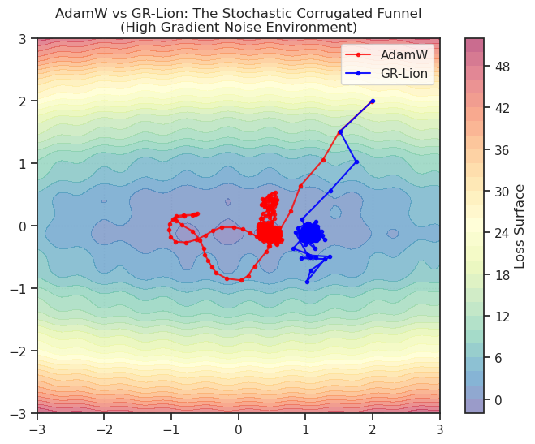
steps = np.arange(len(loss_gr)) + 1
fig, ax = create_figure(1, 1, (5, 2.6))
ax.plot(steps, loss_adam, color='red', label='Adam')
ax.plot(steps, loss_gr, color='blue', label='GR-Lion')
ax.set(xscale='log', yscale='log')
ax.legend()
ax.grid()
plt.show()
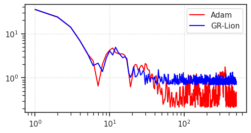
Claude#
functions#
import torch
import numpy as np
import matplotlib.pyplot as plt
from mpl_toolkits.mplot3d import Axes3D
# =============================================================================
# Loss Factory
# =============================================================================
def get_loss_fn(ripple_freq=10, ripple_amp=0.5):
"""
Returns a functional loss_fn(x, y).
The function is mathematically constructed such that (0,0) is the
strict global minimum with a value of 0.0, regardless of parameters.
Args:
ripple_freq (float): Frequency of the cosine waves.
ripple_amp (float): Amplitude scaling of the bumps.
"""
def _loss_fn(x, y):
# 1. The convex bowl (Guarantees global structure)
corridor = 25 * y**2
slope = 0.5 * x**2
# 2. The Ripples (chaotic texture)
# We use (1 - cos*cos) which oscillates between 0 and 2.
# This creates "bumps" on the surface rather than "holes" in it.
# Because this term is always >= 0, it cannot create a minimum deeper than the origin.
distance_sq = x**2 + y**2
ripple_envelope = torch.exp(-distance_sq / 2.0)
# At (0,0), cos(0)=1, so (1 - 1*1) = 0.
# Everywhere else, this adds positive "friction" or bumps.
ripples = ripple_amp * ripple_envelope * (1.0 - torch.cos(ripple_freq * x) * torch.cos(ripple_freq * y))
return corridor + slope + ripples
return _loss_fn
# =============================================================================
# Experiment Runner
# =============================================================================
def run_optimizer(optimizer_class, optimizer_kwargs, start, loss_fn, n_steps=800):
"""Run optimization, return trajectory and losses."""
x = torch.tensor([start[0]], requires_grad=True, dtype=torch.float32)
y = torch.tensor([start[1]], requires_grad=True, dtype=torch.float32)
optimizer = optimizer_class([x, y], **optimizer_kwargs)
trajectory = [(x.item(), y.item())]
losses = [loss_fn(x, y).item()]
for _ in range(n_steps):
optimizer.zero_grad()
loss = loss_fn(x, y)
loss.backward()
optimizer.step()
trajectory.append((x.item(), y.item()))
losses.append(loss_fn(x, y).item())
return np.array(trajectory), np.array(losses)
def run_experiment(lr=0.1, n_steps=1000):
"""Main experiment comparing GR-Lion vs AdamW."""
# ===================
# CONSTRUCT LOSS
# ===================
# We slightly increased amp because (1-cos*cos) is softer than raw sin*sin
loss_f = get_loss_fn(ripple_freq=10, ripple_amp=0.5)
# ===================
# HYPERPARAMETERS
# ===================
START = (3.0, 0.5)
adamw_kwargs = {
'lr': lr,
'betas': (0.9, 0.99),
'weight_decay': 0.0,
}
grlion_kwargs = {
'lr': lr,
'betas': (0.95, 0.99),
'weight_decay': 0.0,
'mass': 0.1,
'kappa': 0.1,
'beta_gravity': 0.99,
}
# ===================
# RUN OPTIMIZERS
# ===================
print("Running AdamW...")
traj_adam, loss_adam = run_optimizer(
torch.optim.AdamW, adamw_kwargs, START, loss_f, n_steps
)
print("Running GR-Lion...")
# NOTE: Ensure class GeneralRelativisticLion is defined in your scope
traj_grlion, loss_grlion = run_optimizer(
GeneralRelativisticLion, grlion_kwargs, START, loss_f, n_steps
)
print_stats(traj_adam, loss_adam, traj_grlion, loss_grlion)
plot_results(traj_adam, loss_adam, traj_grlion, loss_grlion, START, loss_f)
return traj_adam, loss_adam, traj_grlion, loss_grlion
# =============================================================================
# Visualization
# =============================================================================
def plot_results(traj_adam, loss_adam, traj_grlion, loss_grlion, start, loss_fn):
"""Generate comparison plots using the passed loss_fn."""
fig = plt.figure(figsize=(16, 12))
# --- Contour + Trajectories ---
ax1 = fig.add_subplot(2, 2, 1)
x_range = np.linspace(-4, 4, 400)
y_range = np.linspace(-1.5, 1.5, 300)
X, Y = np.meshgrid(x_range, y_range)
tX = torch.from_numpy(X).float()
tY = torch.from_numpy(Y).float()
Z = loss_fn(tX, tY).detach().numpy()
Z_log = np.log10(Z + 1)
contour = ax1.contourf(X, Y, Z_log, levels=50, cmap='Spectral_r', alpha=0.8)
ax1.contour(X, Y, Z_log, levels=20, colors='white', alpha=0.3, linewidths=0.5)
ax1.plot(traj_adam[:, 0], traj_adam[:, 1], 'r-', lw=2, label='AdamW', alpha=0.8)
ax1.plot(traj_grlion[:, 0], traj_grlion[:, 1], 'blue', lw=2, label='GR-Lion', alpha=0.8)
ax1.scatter(*start, c='white', s=100, marker='o', edgecolors='black', zorder=5, label='Start')
ax1.scatter(0, 0, c='yellow', s=150, marker='*', edgecolors='black', zorder=5, label='Global Min (0,0)')
ax1.set_xlabel('x')
ax1.set_ylabel('y')
ax1.set_title('Optimization Trajectories')
ax1.legend(loc='upper right')
plt.colorbar(contour, ax=ax1, label='log₁₀(Loss + 1)')
# --- Loss Curves ---
ax2 = fig.add_subplot(2, 2, 2)
steps = np.arange(len(loss_adam))
ax2.semilogy(steps, loss_adam, 'r-', lw=2, label='AdamW', alpha=0.8)
ax2.semilogy(steps, loss_grlion, 'blue', lw=2, label='GR-Lion', alpha=0.8)
ax2.set_xlabel('Step')
ax2.set_ylabel('Loss (log scale)')
ax2.set_title('Convergence')
ax2.legend()
ax2.grid(True, alpha=0.3)
# --- Zoomed Ripple Region ---
ax3 = fig.add_subplot(2, 2, 3)
x_zoom = np.linspace(-0.8, 0.8, 300)
y_zoom = np.linspace(-0.4, 0.4, 200)
X_z, Y_z = np.meshgrid(x_zoom, y_zoom)
tX_z = torch.from_numpy(X_z).float()
tY_z = torch.from_numpy(Y_z).float()
Z_z = loss_fn(tX_z, tY_z).detach().numpy()
contour_z = ax3.contourf(X_z, Y_z, Z_z, levels=50, cmap='Spectral_r', alpha=0.8)
ax3.contour(X_z, Y_z, Z_z, levels=30, colors='white', alpha=0.3, linewidths=0.5)
# Filter to zoom region
for traj, color, label in [(traj_adam, 'red', 'AdamW'), (traj_grlion, 'blue', 'GR-Lion')]:
mask = (np.abs(traj[:, 0]) < 0.8) & (np.abs(traj[:, 1]) < 0.4)
if mask.any():
ax3.plot(traj[mask, 0], traj[mask, 1], color=color, lw=2, label=label, alpha=0.8)
ax3.scatter(traj[mask, 0][::10], traj[mask, 1][::10], c=color, s=20, alpha=0.6)
ax3.scatter(0, 0, c='yellow', s=150, marker='*', edgecolors='black', zorder=5)
ax3.set_xlabel('x')
ax3.set_ylabel('y')
ax3.set_title('Zoomed: Ripple Region')
ax3.legend()
plt.colorbar(contour_z, ax=ax3, label='Loss')
# --- Distance to Origin ---
ax4 = fig.add_subplot(2, 2, 4)
dist_adam = np.linalg.norm(traj_adam, axis=1)
dist_grlion = np.linalg.norm(traj_grlion, axis=1)
ax4.semilogy(steps, dist_adam, 'r-', lw=2, label='AdamW', alpha=0.8)
ax4.semilogy(steps, dist_grlion, 'blue', lw=2, label='GR-Lion', alpha=0.8)
ax4.set_xlabel('Step')
ax4.set_ylabel('Distance to Origin (log)')
ax4.set_title('Convergence to Origin')
ax4.legend()
ax4.grid(True, alpha=0.3)
plt.tight_layout()
# plt.savefig('gr_lion_comparison.png', dpi=150, bbox_inches='tight')
plt.show()
# --- 3D Surface ---
fig2 = plt.figure(figsize=(12, 8))
ax_3d = fig2.add_subplot(111, projection='3d')
x_3d = np.linspace(-0.5, 3.5, 200)
y_3d = np.linspace(-1, 1, 150)
X_3d, Y_3d = np.meshgrid(x_3d, y_3d)
tX_3d = torch.from_numpy(X_3d).float()
tY_3d = torch.from_numpy(Y_3d).float()
Z_3d = np.clip(loss_fn(tX_3d, tY_3d).detach().numpy(), 0, 30)
ax_3d.plot_surface(X_3d, Y_3d, Z_3d, cmap='Spectral_r', alpha=0.7, linewidth=0, antialiased=True)
t_traj_adam = torch.from_numpy(traj_adam).float()
z_adam = loss_fn(t_traj_adam[:, 0], t_traj_adam[:, 1]).detach().numpy()
z_adam = np.clip(z_adam, 0, 30)
t_traj_grlion = torch.from_numpy(traj_grlion).float()
z_grlion = loss_fn(t_traj_grlion[:, 0], t_traj_grlion[:, 1]).detach().numpy()
z_grlion = np.clip(z_grlion, 0, 30)
ax_3d.plot(traj_adam[:, 0], traj_adam[:, 1], z_adam, 'r-', lw=2, label='AdamW')
ax_3d.plot(traj_grlion[:, 0], traj_grlion[:, 1], z_grlion, 'blue', lw=2, label='GR-Lion')
ax_3d.set_xlabel('x')
ax_3d.set_ylabel('y')
ax_3d.set_zlabel('Loss')
ax_3d.set_title('3D Loss Landscape')
ax_3d.legend()
ax_3d.view_init(elev=35, azim=-60)
# plt.savefig('gr_lion_3d.png', dpi=150, bbox_inches='tight')
plt.show()
def print_stats(traj_adam, loss_adam, traj_grlion, loss_grlion):
"""Print comparison statistics."""
print("\n" + "="*50)
print("RESULTS")
print("="*50)
print(f"\nFinal Loss: AdamW={loss_adam[-1]:.6f} GR-Lion={loss_grlion[-1]:.6f}")
print(f"Final Dist: AdamW={np.linalg.norm(traj_adam[-1]):.4f} GR-Lion={np.linalg.norm(traj_grlion[-1]):.4f}")
for thresh in [1.0, 0.5, 0.1, 0.05, 0.01, 0.001]:
adam_steps = np.argmax(loss_adam < thresh) if (loss_adam < thresh).any() else len(loss_adam)
grlion_steps = np.argmax(loss_grlion < thresh) if (loss_grlion < thresh).any() else len(loss_grlion)
print(f"Steps to loss < {thresh}: AdamW={adam_steps} GR-Lion={grlion_steps}")
run experiment#
traj_adam, loss_adam, traj_grlion, loss_grlion = run_experiment(lr=0.1, n_steps=2000)
Running AdamW...
Running GR-Lion...
==================================================
RESULTS
==================================================
Final Loss: AdamW=0.194501 GR-Lion=0.000960
Final Dist: AdamW=0.6220 GR-Lion=0.0050
Steps to loss < 1.0: AdamW=18 GR-Lion=17
Steps to loss < 0.5: AdamW=29 GR-Lion=23
Steps to loss < 0.1: AdamW=2001 GR-Lion=33
Steps to loss < 0.05: AdamW=2001 GR-Lion=33
Steps to loss < 0.01: AdamW=2001 GR-Lion=42
Steps to loss < 0.001: AdamW=2001 GR-Lion=44
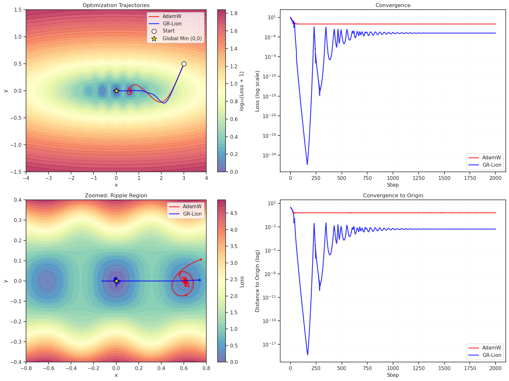
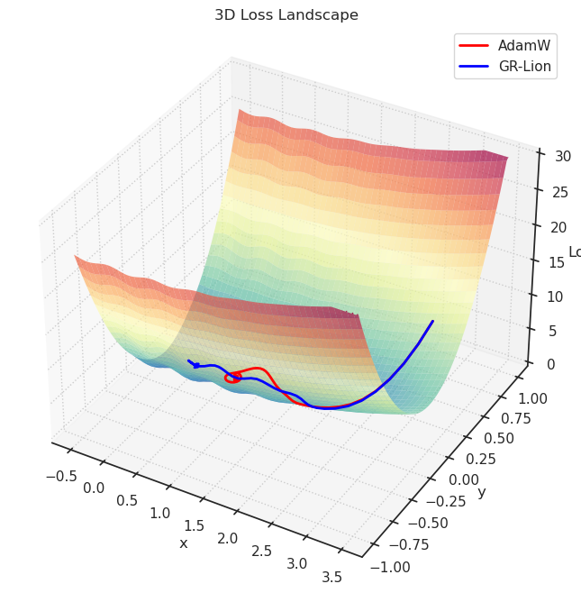
loss_fn = get_loss_fn()
loss_fn(torch.tensor(0.0), torch.tensor(0.0))
tensor(0.)
traj_adam, loss_adam, traj_grlion, loss_grlion = run_experiment(lr=0.01, n_steps=3000)
Running AdamW...
Running GR-Lion...
==================================================
RESULTS
==================================================
Final Loss: AdamW=0.757540 GR-Lion=0.000010
Final Dist: AdamW=1.2061 GR-Lion=0.0005
Steps to loss < 1.0: AdamW=223 GR-Lion=165
Steps to loss < 0.5: AdamW=3001 GR-Lion=226
Steps to loss < 0.1: AdamW=3001 GR-Lion=295
Steps to loss < 0.05: AdamW=3001 GR-Lion=297
Steps to loss < 0.01: AdamW=3001 GR-Lion=299
Steps to loss < 0.001: AdamW=3001 GR-Lion=300
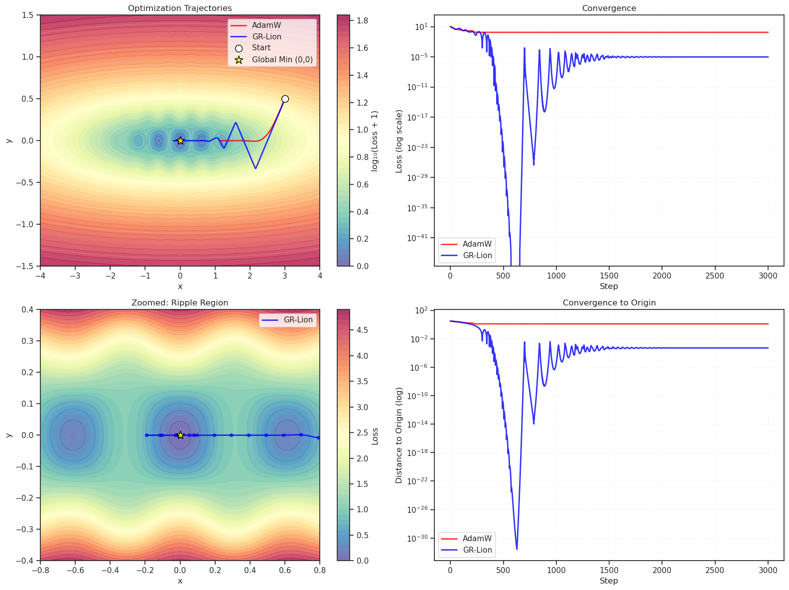
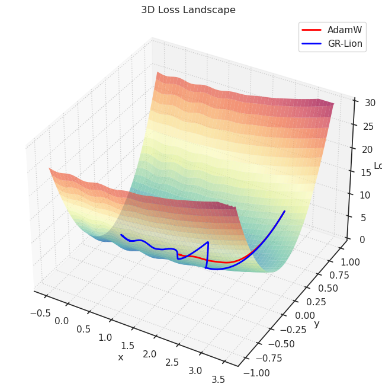
Claude: noisy gradients#
"""
Test 2: Stochastic Gradient Robustness
Hypothesis: GR-Lion detects gradient noise as shock, increases mass,
and becomes more conservative—leading to more stable convergence.
Design:
- Simple convex landscape (quadratic) for clean comparison
- Inject controlled noise: g_noisy = g_true + σ * N(0,1)
- Test multiple noise levels
- Compare: final loss, variance of final position, trajectory stability
"""
# =============================================================================
# Landscape: Simple Quadratic (convex)
# =============================================================================
def loss_fn(x, y):
"""
Anisotropic quadratic: different curvature in x vs y.
Minimum at (0, 0).
"""
return 0.5 * x**2 + 5.0 * y**2
def loss_fn_np(x, y):
return 0.5 * x**2 + 5.0 * y**2
# =============================================================================
# Noisy Optimization Runner
# =============================================================================
def run_with_noise(optimizer_class, optimizer_kwargs, start, noise_std, n_steps=1000, seed=None):
"""Run optimization with noisy gradients."""
if seed is not None:
torch.manual_seed(seed)
np.random.seed(seed)
x = torch.tensor([start[0]], requires_grad=True, dtype=torch.float32)
y = torch.tensor([start[1]], requires_grad=True, dtype=torch.float32)
optimizer = optimizer_class([x, y], **optimizer_kwargs)
trajectory = [(x.item(), y.item())]
losses = [loss_fn(x, y).item()]
for _ in range(n_steps):
optimizer.zero_grad()
loss = loss_fn(x, y)
loss.backward()
# Inject noise into gradients
if noise_std > 0:
x.grad.add_(torch.randn_like(x.grad) * noise_std)
y.grad.add_(torch.randn_like(y.grad) * noise_std)
optimizer.step()
trajectory.append((x.item(), y.item()))
losses.append(loss_fn(x, y).item())
return np.array(trajectory), np.array(losses)
def run_noise_experiment(noise_levels, n_runs=50, n_steps=1000):
"""Run experiment across multiple noise levels."""
# ===================
# HYPERPARAMETERS
# ===================
START = (3.0, 1.0)
LR = 0.02
adamw_kwargs = {
'lr': LR,
'betas': (0.9, 0.999),
'weight_decay': 0.0,
}
grlion_kwargs = {
'lr': LR,
'betas': (0.9, 0.9),
'weight_decay': 0.0,
'mass': 0.01,
'kappa': 2.0,
'beta_gravity': 0.999,
}
results = {
'adamw': defaultdict(list),
'grlion': defaultdict(list),
}
all_trajectories = {
'adamw': defaultdict(list),
'grlion': defaultdict(list),
}
for noise_std in noise_levels:
print(f"\nNoise σ = {noise_std}")
for run in range(n_runs):
seed = 1000 * int(noise_std * 100) + run # Reproducible but different per run
# AdamW
traj, losses = run_with_noise(
torch.optim.AdamW, adamw_kwargs, START, noise_std, n_steps, seed
)
results['adamw'][noise_std].append({
'final_loss': losses[-1],
'final_pos': traj[-1],
'trajectory': traj,
'losses': losses,
})
all_trajectories['adamw'][noise_std].append(traj)
# GR-Lion (same seed for fair comparison)
traj, losses = run_with_noise(
GeneralRelativisticLion, grlion_kwargs, START, noise_std, n_steps, seed
)
results['grlion'][noise_std].append({
'final_loss': losses[-1],
'final_pos': traj[-1],
'trajectory': traj,
'losses': losses,
})
all_trajectories['grlion'][noise_std].append(traj)
return results, all_trajectories, START
# =============================================================================
# Analysis
# =============================================================================
def analyze_noise_results(results, noise_levels):
"""Compute statistics across noise levels."""
print("\n" + "="*70)
print("STOCHASTIC GRADIENT RESULTS")
print("="*70)
stats = {'adamw': {}, 'grlion': {}}
for name in ['adamw', 'grlion']:
print(f"\n{name.upper()}:")
print("-" * 50)
print(f"{'Noise σ':>10} {'Mean Loss':>12} {'Std Loss':>12} {'Pos Std':>12}")
print("-" * 50)
for noise_std in noise_levels:
runs = results[name][noise_std]
final_losses = [r['final_loss'] for r in runs]
final_positions = np.array([r['final_pos'] for r in runs])
mean_loss = np.mean(final_losses)
std_loss = np.std(final_losses)
pos_std = np.mean(np.std(final_positions, axis=0)) # Average std in x and y
stats[name][noise_std] = {
'mean_loss': mean_loss,
'std_loss': std_loss,
'pos_std': pos_std,
}
print(f"{noise_std:>10.2f} {mean_loss:>12.4f} {std_loss:>12.4f} {pos_std:>12.4f}")
# Comparison summary
print("\n" + "="*70)
print("COMPARISON (GR-Lion vs AdamW)")
print("="*70)
print(f"{'Noise σ':>10} {'Loss Ratio':>12} {'Stability':>15}")
print("-" * 40)
for noise_std in noise_levels:
adam_loss = stats['adamw'][noise_std]['mean_loss']
grlion_loss = stats['grlion'][noise_std]['mean_loss']
adam_std = stats['adamw'][noise_std]['std_loss']
grlion_std = stats['grlion'][noise_std]['std_loss']
loss_ratio = grlion_loss / adam_loss if adam_loss > 0 else float('inf')
if grlion_std < adam_std:
stability = "GR-Lion more stable"
elif grlion_std > adam_std:
stability = "AdamW more stable"
else:
stability = "Similar"
print(f"{noise_std:>10.2f} {loss_ratio:>12.3f} {stability:>15}")
return stats
# =============================================================================
# Visualization
# =============================================================================
def plot_noise_results(results, all_trajectories, noise_levels, start):
"""Generate comprehensive visualizations."""
# --- Figure 1: Trajectories at different noise levels ---
n_noise = len(noise_levels)
fig, axes = plt.subplots(2, n_noise, figsize=(5*n_noise, 10))
# Landscape grid
x_range = np.linspace(-1, 4, 200)
y_range = np.linspace(-1.5, 1.5, 150)
X, Y = np.meshgrid(x_range, y_range)
Z = loss_fn_np(X, Y)
for i, noise_std in enumerate(noise_levels):
# AdamW (top row)
ax = axes[0, i]
ax.contourf(X, Y, Z, levels=30, cmap='Spectral_r', alpha=0.6)
ax.contour(X, Y, Z, levels=15, colors='white', alpha=0.3, linewidths=0.5)
for traj in all_trajectories['adamw'][noise_std][:10]: # Show first 10
ax.plot(traj[:, 0], traj[:, 1], 'r-', alpha=0.4, linewidth=0.8)
ax.scatter(*start, c='white', s=100, marker='o', edgecolors='black', zorder=5)
ax.scatter(0, 0, c='yellow', s=150, marker='*', edgecolors='black', zorder=5)
ax.set_title(f'AdamW (σ={noise_std})', fontsize=12)
ax.set_xlabel('x')
if i == 0:
ax.set_ylabel('y')
# GR-Lion (bottom row)
ax = axes[1, i]
ax.contourf(X, Y, Z, levels=30, cmap='Spectral_r', alpha=0.6)
ax.contour(X, Y, Z, levels=15, colors='white', alpha=0.3, linewidths=0.5)
for traj in all_trajectories['grlion'][noise_std][:10]:
ax.plot(traj[:, 0], traj[:, 1], 'blue', alpha=0.4, linewidth=0.8)
ax.scatter(*start, c='white', s=100, marker='o', edgecolors='black', zorder=5)
ax.scatter(0, 0, c='yellow', s=150, marker='*', edgecolors='black', zorder=5)
ax.set_title(f'GR-Lion (σ={noise_std})', fontsize=12)
ax.set_xlabel('x')
if i == 0:
ax.set_ylabel('y')
plt.tight_layout()
# plt.savefig('noise_trajectories.png', dpi=150, bbox_inches='tight')
plt.show()
# --- Figure 2: Loss curves comparison ---
fig, axes = plt.subplots(1, n_noise, figsize=(5*n_noise, 4))
for i, noise_std in enumerate(noise_levels):
ax = axes[i] if n_noise > 1 else axes
# Plot mean loss curves with confidence bands
adam_losses = np.array([r['losses'] for r in results['adamw'][noise_std]])
grlion_losses = np.array([r['losses'] for r in results['grlion'][noise_std]])
steps = np.arange(adam_losses.shape[1])
# AdamW
mean_adam = np.mean(adam_losses, axis=0)
std_adam = np.std(adam_losses, axis=0)
ax.semilogy(steps, mean_adam, 'r-', linewidth=2, label='AdamW')
ax.fill_between(steps, mean_adam - std_adam, mean_adam + std_adam, color='red', alpha=0.2)
# GR-Lion
mean_grlion = np.mean(grlion_losses, axis=0)
std_grlion = np.std(grlion_losses, axis=0)
ax.semilogy(steps, mean_grlion, 'blue', linewidth=2, label='GR-Lion')
ax.fill_between(steps, mean_grlion - std_grlion, mean_grlion + std_grlion, color='blue', alpha=0.2)
ax.set_xlabel('Step')
ax.set_ylabel('Loss (log)')
ax.set_title(f'Noise σ = {noise_std}')
ax.legend()
ax.grid(True, alpha=0.3)
plt.tight_layout()
# plt.savefig('noise_loss_curves.png', dpi=150, bbox_inches='tight')
plt.show()
# --- Figure 3: Final position scatter ---
fig, axes = plt.subplots(1, n_noise, figsize=(5*n_noise, 5))
for i, noise_std in enumerate(noise_levels):
ax = axes[i] if n_noise > 1 else axes
adam_final = np.array([r['final_pos'] for r in results['adamw'][noise_std]])
grlion_final = np.array([r['final_pos'] for r in results['grlion'][noise_std]])
ax.scatter(adam_final[:, 0], adam_final[:, 1], c='red', s=40, alpha=0.6, label='AdamW')
ax.scatter(grlion_final[:, 0], grlion_final[:, 1], c='blue', s=40, alpha=0.6, label='GR-Lion')
ax.scatter(0, 0, c='yellow', s=200, marker='*', edgecolors='black', zorder=5, label='Minimum')
ax.set_xlabel('x')
ax.set_ylabel('y')
ax.set_title(f'Final Positions (σ={noise_std})')
ax.legend()
ax.set_aspect('equal')
ax.grid(True, alpha=0.3)
plt.tight_layout()
# plt.savefig('noise_final_positions.png', dpi=150, bbox_inches='tight')
plt.show()
# --- Figure 4: Summary statistics ---
fig, axes = plt.subplots(1, 2, figsize=(12, 5))
# Mean final loss vs noise
ax = axes[0]
adam_means = [np.mean([r['final_loss'] for r in results['adamw'][σ]]) for σ in noise_levels]
adam_stds = [np.std([r['final_loss'] for r in results['adamw'][σ]]) for σ in noise_levels]
grlion_means = [np.mean([r['final_loss'] for r in results['grlion'][σ]]) for σ in noise_levels]
grlion_stds = [np.std([r['final_loss'] for r in results['grlion'][σ]]) for σ in noise_levels]
ax.errorbar(noise_levels, adam_means, yerr=adam_stds, fmt='ro-', capsize=5, linewidth=2, label='AdamW')
ax.errorbar(noise_levels, grlion_means, yerr=grlion_stds, fmt='c^-', capsize=5, linewidth=2, label='GR-Lion')
ax.set_xlabel('Noise σ')
ax.set_ylabel('Final Loss (mean ± std)')
ax.set_title('Final Loss vs Noise Level')
ax.legend()
ax.grid(True, alpha=0.3)
# Position variance vs noise
ax = axes[1]
adam_pos_std = [np.mean(np.std([r['final_pos'] for r in results['adamw'][σ]], axis=0)) for σ in noise_levels]
grlion_pos_std = [np.mean(np.std([r['final_pos'] for r in results['grlion'][σ]], axis=0)) for σ in noise_levels]
ax.plot(noise_levels, adam_pos_std, 'ro-', linewidth=2, markersize=8, label='AdamW')
ax.plot(noise_levels, grlion_pos_std, 'c^-', linewidth=2, markersize=8, label='GR-Lion')
ax.set_xlabel('Noise σ')
ax.set_ylabel('Position Std Dev')
ax.set_title('Convergence Stability vs Noise Level')
ax.legend()
ax.grid(True, alpha=0.3)
plt.tight_layout()
# plt.savefig('noise_summary_stats.png', dpi=150, bbox_inches='tight')
plt.show()
%%time
print("="*50)
print("TEST 2: Stochastic Gradient Robustness")
print("="*50)
# Noise levels to test
NOISE_LEVELS = [0.0, 0.1, 0.5, 1.0, 2.0, 3.0, 5.0, 10.0]
N_RUNS = 100
N_STEPS = 1500
print(f"\nNoise levels: {NOISE_LEVELS}")
print(f"Runs per level: {N_RUNS}")
print(f"Steps per run: {N_STEPS}")
results, all_trajectories, start = run_noise_experiment(
NOISE_LEVELS, n_runs=N_RUNS, n_steps=N_STEPS
)
stats = analyze_noise_results(results, NOISE_LEVELS)
print("\nGenerating plots...")
plot_noise_results(results, all_trajectories, NOISE_LEVELS, start)
==================================================
TEST 2: Stochastic Gradient Robustness
==================================================
Noise levels: [0.0, 0.1, 0.5, 1.0, 2.0, 3.0, 5.0, 10.0]
Runs per level: 100
Steps per run: 1500
Noise σ = 0.0
Noise σ = 0.1
Noise σ = 0.5
Noise σ = 1.0
Noise σ = 2.0
Noise σ = 3.0
Noise σ = 5.0
Noise σ = 10.0
======================================================================
STOCHASTIC GRADIENT RESULTS
======================================================================
ADAMW:
--------------------------------------------------
Noise σ Mean Loss Std Loss Pos Std
--------------------------------------------------
0.00 0.0000 0.0000 0.0000
0.10 0.0002 0.0003 0.0103
0.50 0.0032 0.0033 0.0386
1.00 0.0087 0.0084 0.0620
2.00 0.0230 0.0205 0.1012
3.00 0.0303 0.0268 0.1173
5.00 0.0511 0.0485 0.1509
10.00 0.1101 0.0969 0.2161
GRLION:
--------------------------------------------------
Noise σ Mean Loss Std Loss Pos Std
--------------------------------------------------
0.00 0.0000 0.0000 0.0000
0.10 0.0005 0.0006 0.0148
0.50 0.0027 0.0028 0.0338
1.00 0.0058 0.0056 0.0498
2.00 0.0134 0.0118 0.0773
3.00 0.0173 0.0158 0.0882
5.00 0.0311 0.0358 0.1183
10.00 0.0956 0.0763 0.1707
======================================================================
COMPARISON (GR-Lion vs AdamW)
======================================================================
Noise σ Loss Ratio Stability
----------------------------------------
0.00 inf Similar
0.10 2.338 AdamW more stable
0.50 0.834 GR-Lion more stable
1.00 0.661 GR-Lion more stable
2.00 0.581 GR-Lion more stable
3.00 0.570 GR-Lion more stable
5.00 0.608 GR-Lion more stable
10.00 0.869 GR-Lion more stable
Generating plots...
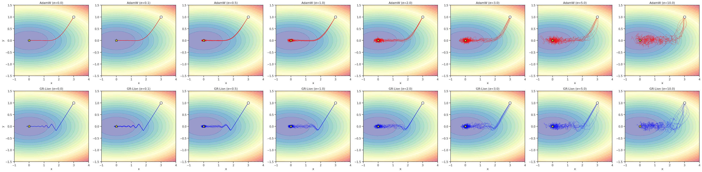
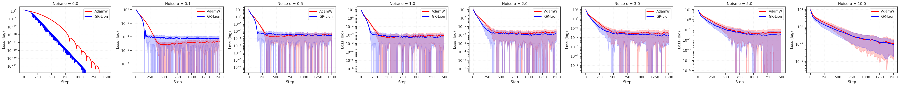
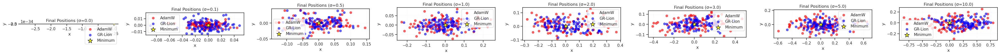
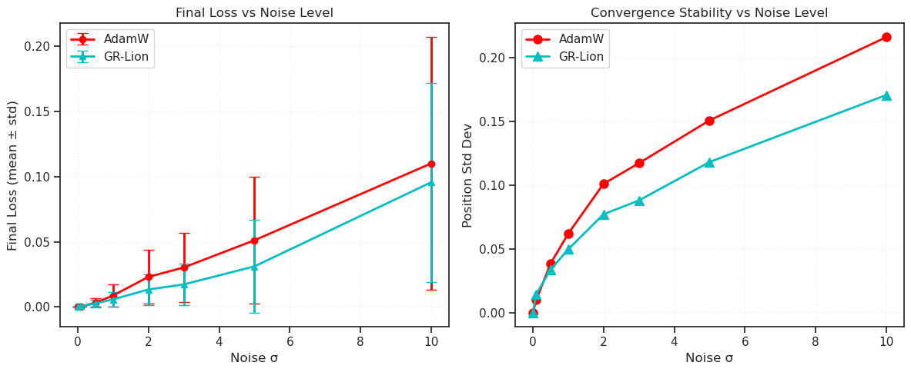
CPU times: user 11min 59s, sys: 264 ms, total: 11min 59s
Wall time: 12min
## Was:
# 'lr': 0.02
# 'mass': 0.001,
# 'kappa': 2.0,
==================================================
TEST 2: Stochastic Gradient Robustness
==================================================
Noise levels: [0.0, 0.1, 0.5, 1.0, 2.0, 3.0, 5.0, 10.0]
Runs per level: 100
Steps per run: 1200
Noise σ = 0.0
Noise σ = 0.1
Noise σ = 0.5
Noise σ = 1.0
Noise σ = 2.0
Noise σ = 3.0
Noise σ = 5.0
Noise σ = 10.0
======================================================================
STOCHASTIC GRADIENT RESULTS
======================================================================
ADAMW:
--------------------------------------------------
Noise σ Mean Loss Std Loss Pos Std
--------------------------------------------------
0.00 0.0000 0.0000 0.0000
0.10 0.0002 0.0002 0.0087
0.50 0.0032 0.0030 0.0391
1.00 0.0082 0.0094 0.0606
2.00 0.0185 0.0184 0.0894
3.00 0.0301 0.0299 0.1119
5.00 0.0479 0.0480 0.1438
10.00 0.1415 0.1243 0.2120
GRLION:
--------------------------------------------------
Noise σ Mean Loss Std Loss Pos Std
--------------------------------------------------
0.00 0.0000 0.0000 0.0000
0.10 0.0003 0.0003 0.0122
0.50 0.0021 0.0022 0.0322
1.00 0.0050 0.0048 0.0469
2.00 0.0094 0.0098 0.0638
3.00 0.0199 0.0192 0.0929
5.00 0.0282 0.0256 0.1115
10.00 0.1337 0.1047 0.1855
======================================================================
COMPARISON (GR-Lion vs AdamW)
======================================================================
Noise σ Loss Ratio Stability
----------------------------------------
0.00 4237589940715.673 Similar
0.10 1.873 AdamW more stable
0.50 0.657 GR-Lion more stable
1.00 0.606 GR-Lion more stable
2.00 0.506 GR-Lion more stable
3.00 0.663 GR-Lion more stable
5.00 0.589 GR-Lion more stable
10.00 0.944 GR-Lion more stable
Generating plots...
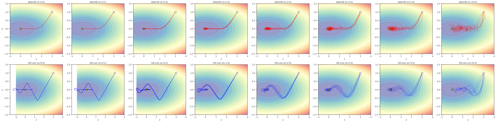
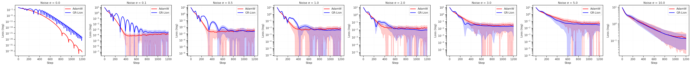
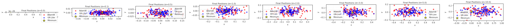
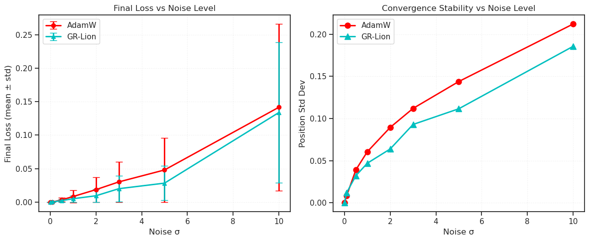
CPU times: user 9min 43s, sys: 313 ms, total: 9min 43s
Wall time: 9min 44s
## Was: mass = 0.01, kappa = 0.1
==================================================
TEST 2: Stochastic Gradient Robustness
==================================================
Noise levels: [0.0, 0.1, 0.5, 1.0, 2.0, 3.0, 5.0, 10.0]
Runs per level: 100
Steps per run: 1200
Noise σ = 0.0
Noise σ = 0.1
Noise σ = 0.5
Noise σ = 1.0
Noise σ = 2.0
Noise σ = 3.0
Noise σ = 5.0
Noise σ = 10.0
======================================================================
STOCHASTIC GRADIENT RESULTS
======================================================================
ADAMW:
--------------------------------------------------
Noise σ Mean Loss Std Loss Pos Std
--------------------------------------------------
0.00 0.0000 0.0000 0.0000
0.10 0.0000 0.0000 0.0047
0.50 0.0011 0.0011 0.0223
1.00 0.0035 0.0041 0.0391
2.00 0.0091 0.0096 0.0612
3.00 0.0198 0.0183 0.0778
5.00 0.0648 0.0500 0.0996
10.00 0.4808 0.2027 0.1465
GRLION:
--------------------------------------------------
Noise σ Mean Loss Std Loss Pos Std
--------------------------------------------------
0.00 0.0000 0.0000 0.0000
0.10 0.0004 0.0005 0.0154
0.50 0.0035 0.0034 0.0417
1.00 0.0086 0.0099 0.0640
2.00 0.0187 0.0179 0.0936
3.00 0.0404 0.0436 0.1328
5.00 0.0606 0.0610 0.1627
10.00 0.1508 0.1459 0.2625
======================================================================
COMPARISON (GR-Lion vs AdamW)
======================================================================
Noise σ Loss Ratio Stability
----------------------------------------
0.00 0.000 Similar
0.10 9.632 AdamW more stable
0.50 3.221 AdamW more stable
1.00 2.429 AdamW more stable
2.00 2.055 AdamW more stable
3.00 2.034 AdamW more stable
5.00 0.935 AdamW more stable
10.00 0.314 GR-Lion more stable
Generating plots...
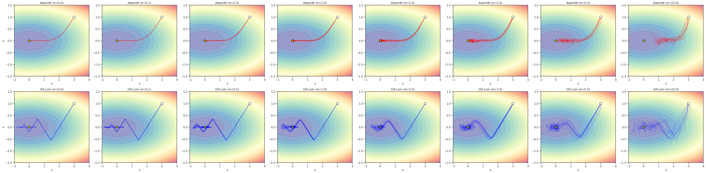
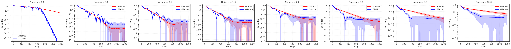
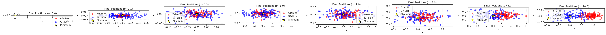
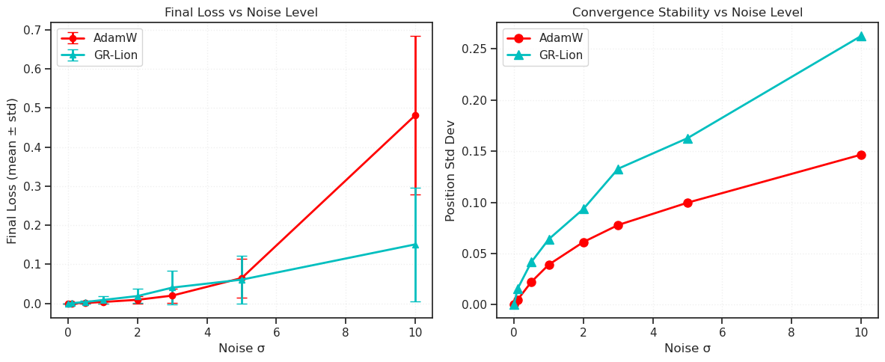
CPU times: user 9min 38s, sys: 258 ms, total: 9min 38s
Wall time: 9min 39s
## Was: mass = 0.01, kappa = 1.0
==================================================
TEST 2: Stochastic Gradient Robustness
==================================================
Noise levels: [0.0, 0.1, 0.5, 1.0, 2.0, 3.0, 5.0, 10.0]
Runs per level: 100
Steps per run: 1200
Noise σ = 0.0
Noise σ = 0.1
Noise σ = 0.5
Noise σ = 1.0
Noise σ = 2.0
Noise σ = 3.0
Noise σ = 5.0
Noise σ = 10.0
======================================================================
STOCHASTIC GRADIENT RESULTS
======================================================================
ADAMW:
--------------------------------------------------
Noise σ Mean Loss Std Loss Pos Std
--------------------------------------------------
0.00 0.0000 0.0000 0.0000
0.10 0.0000 0.0000 0.0047
0.50 0.0011 0.0011 0.0223
1.00 0.0035 0.0041 0.0391
2.00 0.0091 0.0096 0.0612
3.00 0.0198 0.0183 0.0778
5.00 0.0648 0.0500 0.0996
10.00 0.4808 0.2027 0.1465
GRLION:
--------------------------------------------------
Noise σ Mean Loss Std Loss Pos Std
--------------------------------------------------
0.00 0.0000 0.0000 0.0000
0.10 0.0002 0.0002 0.0104
0.50 0.0016 0.0016 0.0268
1.00 0.0040 0.0040 0.0408
2.00 0.0072 0.0080 0.0554
3.00 0.0142 0.0126 0.0779
5.00 0.0278 0.0257 0.0956
10.00 0.3214 0.1679 0.1516
======================================================================
COMPARISON (GR-Lion vs AdamW)
======================================================================
Noise σ Loss Ratio Stability
----------------------------------------
0.00 0.000 Similar
0.10 4.478 AdamW more stable
0.50 1.471 AdamW more stable
1.00 1.117 GR-Lion more stable
2.00 0.786 GR-Lion more stable
3.00 0.717 GR-Lion more stable
5.00 0.430 GR-Lion more stable
10.00 0.668 GR-Lion more stable
Generating plots...
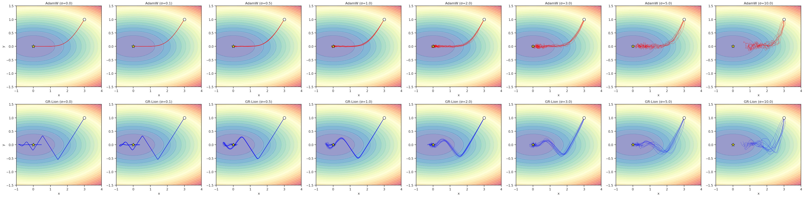
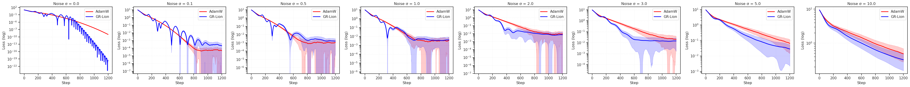
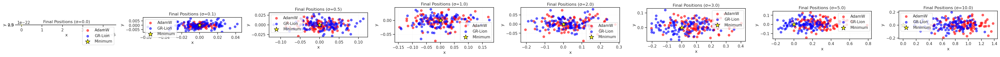
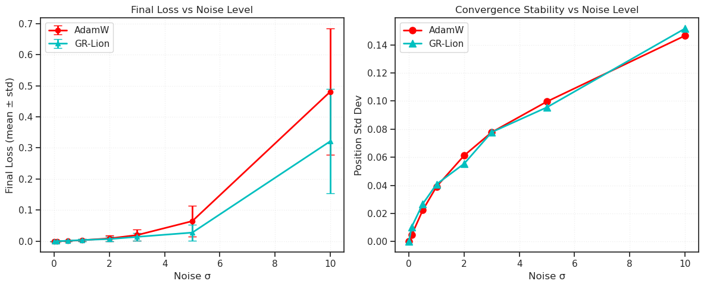
CPU times: user 9min 39s, sys: 375 ms, total: 9min 40s
Wall time: 9min 40s
Gemini: additional stuff#
import torch
import numpy as np
import matplotlib.pyplot as plt
from torch.optim import AdamW
def get_optimizer(name, params):
if name == "AdamW":
return AdamW(params, lr=0.01, betas=(0.9, 0.999)) # Standard AdamW
elif name == "GR-Lion":
# Note: Slightly lower beta_gravity for faster recovery
return GeneralRelativisticLion(params, lr=0.01, mass=1e-5, kappa=2.0, beta_gravity=0.90)
def run_test(test_name, steps=300):
trajectories = {}
for optim_name in ["AdamW", "GR-Lion"]:
# Start point differs per test to maximize visibility of effect
if test_name == "Switchback":
params = torch.tensor([-2.0, 2.5], requires_grad=True)
elif test_name == "BadBatch":
params = torch.tensor([-2.0, 0.0], requires_grad=True)
elif test_name == "Plateau":
params = torch.tensor([-3.0, 0.0], requires_grad=True)
opt = get_optimizer(optim_name, [params])
path = []
for t in range(steps):
opt.zero_grad()
x, y = params[0], params[1]
path.append((x.item(), y.item()))
# --- SCENARIO 1: The Switchback Valley ---
if test_name == "Switchback":
# A narrow valley that follows a sine wave
target_y = torch.sin(x * 3.0)
# Steep walls (100x penalty), gentle drift along X
loss = 100 * (y - target_y)**2 + 0.1 * x**2
# --- SCENARIO 2: The Bad Batch Spike ---
elif test_name == "BadBatch":
# Simple bowl
loss = x**2 + y**2
loss.backward()
# At step 30, inject a massive gradient spike (Bad Batch)
if t == 30:
with torch.no_grad():
params.grad.add_(torch.tensor([100.0, 100.0]))
# Skip normal backward for the rest of this block to keep logic clean
opt.step()
continue
# --- SCENARIO 3: The Vacuum Plateau ---
elif test_name == "Plateau":
# Extremely flat gradient in X direction
loss = 0.0001 * x**2 + y**2
loss.backward()
opt.step()
trajectories[optim_name] = np.array(path)
return trajectories
# -----------------------------------------------------------
# Visualization
# -----------------------------------------------------------
tests = ["Switchback", "BadBatch", "Plateau"]
fig, axes = plt.subplots(1, 3, figsize=(18, 5), dpi=300)
for ax, test in zip(axes, tests):
paths = run_test(test)
# Plot Background (Approximate)
if test == "Switchback":
x = np.linspace(-3, 3, 100)
y = np.linspace(-3, 3, 100)
X, Y = np.meshgrid(x, y)
Z = 100 * (Y - np.sin(X * 3.0))**2 + 0.1 * X**2
ax.contourf(X, Y, np.log(Z + 1), levels=30, cmap='gray_r', alpha=0.3)
ax.set_title("The Switchback\n(Curve Navigation)")
elif test == "BadBatch":
ax.set_title("The Bad Batch\n(Spike Recovery)")
ax.set_xlim(-2.5, 2.5)
ax.set_ylim(-2.5, 2.5)
ax.grid(True)
# Mark the spike location
ax.text(-1.5, -1.5, "Spike @ t=30", fontsize=9)
elif test == "Plateau":
x = np.linspace(-3.5, 3, 100)
y = np.linspace(-1, 1, 100)
X, Y = np.meshgrid(x, y)
Z = 0.0001 * X**2 + Y**2
ax.contourf(X, Y, Z, levels=20, cmap='gray_r', alpha=0.3)
ax.set_title("The Vacuum Plateau\n(Speed Test)")
# Plot Trajectories
for name, path in paths.items():
color = 'red' if name == "AdamW" else 'blue'
# Plot lines
ax.plot(path[:, 0], path[:, 1], '-', label=name, markersize=0.0, lw=0.5, alpha=0.8, color=color)
# Mark Start/End
ax.plot(path[0, 0], path[0, 1], 'x', color='black') # Start
ax.plot(path[-1, 0], path[-1, 1], '*', color=color, markersize=10) # End
ax.legend()
plt.tight_layout()
plt.show()
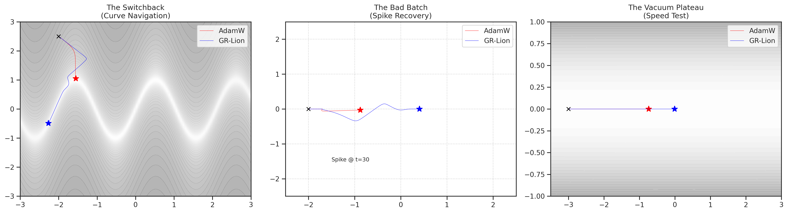
import torch
import numpy as np
import matplotlib.pyplot as plt
from torch.optim import AdamW
def get_optimizer(name, params):
if name == "AdamW":
return AdamW(params, lr=0.01, betas=(0.9, 0.999)) # Standard AdamW
elif name == "GR-Lion":
# Note: Slightly lower beta_gravity for faster recovery
return GeneralRelativisticLion(params, lr=0.01, mass=0.1, kappa=0.1, beta_gravity=0.999)
def run_test(test_name, steps=300):
trajectories = {}
for optim_name in ["AdamW", "GR-Lion"]:
# Start point differs per test to maximize visibility of effect
if test_name == "Switchback":
params = torch.tensor([-2.0, 2.5], requires_grad=True)
elif test_name == "BadBatch":
params = torch.tensor([-2.0, 0.0], requires_grad=True)
elif test_name == "Plateau":
params = torch.tensor([-3.0, 0.0], requires_grad=True)
opt = get_optimizer(optim_name, [params])
path = []
for t in range(steps):
opt.zero_grad()
x, y = params[0], params[1]
path.append((x.item(), y.item()))
# --- SCENARIO 1: The Switchback Valley ---
if test_name == "Switchback":
# A narrow valley that follows a sine wave
target_y = torch.sin(x * 3.0)
# Steep walls (100x penalty), gentle drift along X
loss = 100 * (y - target_y)**2 + 0.1 * x**2
# --- SCENARIO 2: The Bad Batch Spike ---
elif test_name == "BadBatch":
# Simple bowl
loss = x**2 + y**2
loss.backward()
# At step 30, inject a massive gradient spike (Bad Batch)
if t == 30:
with torch.no_grad():
params.grad.add_(torch.tensor([100.0, 100.0]))
# Skip normal backward for the rest of this block to keep logic clean
opt.step()
continue
# --- SCENARIO 3: The Vacuum Plateau ---
elif test_name == "Plateau":
# Extremely flat gradient in X direction
loss = 0.0001 * x**2 + y**2
loss.backward()
opt.step()
trajectories[optim_name] = np.array(path)
return trajectories
# -----------------------------------------------------------
# Visualization
# -----------------------------------------------------------
tests = ["Switchback", "BadBatch", "Plateau"]
fig, axes = plt.subplots(1, 3, figsize=(18, 5), dpi=300)
for ax, test in zip(axes, tests):
paths = run_test(test)
# Plot Background (Approximate)
if test == "Switchback":
x = np.linspace(-3, 3, 100)
y = np.linspace(-3, 3, 100)
X, Y = np.meshgrid(x, y)
Z = 100 * (Y - np.sin(X * 3.0))**2 + 0.1 * X**2
ax.contourf(X, Y, np.log(Z + 1), levels=30, cmap='gray_r', alpha=0.3)
ax.set_title("The Switchback\n(Curve Navigation)")
elif test == "BadBatch":
ax.set_title("The Bad Batch\n(Spike Recovery)")
ax.set_xlim(-2.5, 2.5)
ax.set_ylim(-2.5, 2.5)
ax.grid(True)
# Mark the spike location
ax.text(-1.5, -1.5, "Spike @ t=30", fontsize=9)
elif test == "Plateau":
x = np.linspace(-3.5, 3, 100)
y = np.linspace(-1, 1, 100)
X, Y = np.meshgrid(x, y)
Z = 0.0001 * X**2 + Y**2
ax.contourf(X, Y, Z, levels=20, cmap='gray_r', alpha=0.3)
ax.set_title("The Vacuum Plateau\n(Speed Test)")
# Plot Trajectories
for name, path in paths.items():
color = 'red' if name == "AdamW" else 'blue'
# Plot lines
ax.plot(path[:, 0], path[:, 1], '-', label=name, markersize=0.0, lw=0.5, alpha=0.8, color=color)
# Mark Start/End
ax.plot(path[0, 0], path[0, 1], 'x', color='black') # Start
ax.plot(path[-1, 0], path[-1, 1], '*', color=color, markersize=10) # End
ax.legend()
plt.tight_layout()
plt.show()
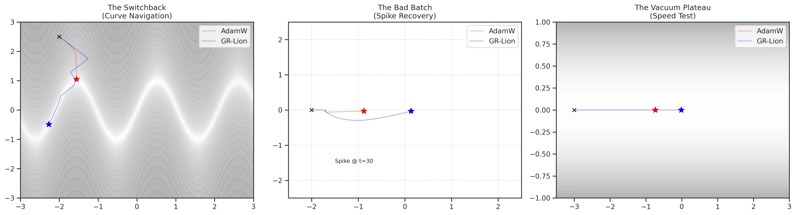
x_drift_strength = 1.0
def get_optimizer(name, params, lr=0.01):
if name == "AdamW":
return torch.optim.AdamW(params, lr=lr, betas=(0.9, 0.999)) # Standard AdamW
elif name == "GR-Lion":
# Note: Slightly lower beta_gravity for faster recovery
return GeneralRelativisticLion(params, lr=lr, mass=0.1, kappa=0.1, beta_gravity=0.99, betas=(0.9, 0.9))
def run_test(test_name, steps=300):
trajectories = {}
for optim_name in ["AdamW", "GR-Lion"]:
# Start point differs per test to maximize visibility of effect
if test_name == "Switchback":
params = torch.tensor([-2.0, 2.5], requires_grad=True)
elif test_name == "BadBatch":
params = torch.tensor([-2.0, 0.0], requires_grad=True)
elif test_name == "Plateau":
params = torch.tensor([-3.0, 0.0], requires_grad=True)
opt = get_optimizer(optim_name, [params])
path = []
for t in range(steps):
opt.zero_grad()
x, y = params[0], params[1]
path.append((x.item(), y.item()))
# --- SCENARIO 1: The Switchback Valley ---
if test_name == "Switchback":
# A narrow valley that follows a sine wave
target_y = torch.sin(x * 3.0)
# Steep walls (100x penalty), drift along X
loss = 100 * (y - target_y)**2 + x_drift_strength * x**2
loss.backward()
# --- SCENARIO 2: The Bad Batch Spike ---
elif test_name == "BadBatch":
# Simple bowl
loss = x**2 + y**2
loss.backward()
# At step 30, inject a massive gradient spike (Bad Batch)
if t == 30:
with torch.no_grad():
params.grad.add_(torch.tensor([100.0, 100.0]))
# --- SCENARIO 3: The Vacuum Plateau ---
elif test_name == "Plateau":
# Extremely flat gradient in X direction
loss = 0.0001 * x**2 + y**2
loss.backward()
opt.step()
trajectories[optim_name] = np.array(path)
return trajectories
# -----------------------------------------------------------
# Visualization
# -----------------------------------------------------------
tests = ["Switchback", "BadBatch", "Plateau"]
fig, axes = plt.subplots(1, 3, figsize=(12, 3.5), dpi=300)
for (ax, test) in zip(axes, tests):
if test == 'Switchback':
steps = 600
elif test == 'BadBatch':
steps = 550
elif test == 'Plateau':
steps = 300
paths = run_test(test, steps=steps)
# Plot Background (Approximate)
if test == "Switchback":
x = np.linspace(-4, 1, 200)
y = np.linspace(-3, 3, 200)
X, Y = np.meshgrid(x, y)
Z = 100 * (Y - np.sin(X * 3.0))**2 + x_drift_strength * X**2
ax.contourf(X, Y, np.log(Z + 1), levels=30, cmap='gray_r', alpha=0.3)
ax.set_title("The Switchback\n(Curve Navigation)")
elif test == "BadBatch":
ax.set_title("The Bad Batch\n(Spike Recovery)")
ax.set_xlim(-2.5, 2.5)
ax.set_ylim(-2.5, 2.5)
ax.grid(True)
# Mark the spike location
ax.text(-1.5, -1.5, "Spike @ t=30", fontsize=9)
elif test == "Plateau":
x = np.linspace(-3.5, 3, 100)
y = np.linspace(-1, 1, 100)
X, Y = np.meshgrid(x, y)
Z = 0.0001 * X**2 + Y**2
ax.contourf(X, Y, Z, levels=20, cmap='gray_r', alpha=0.3)
ax.set_title("The Vacuum Plateau\n(Speed Test)")
# Plot Trajectories
for name, path in paths.items():
color = 'red' if name == "AdamW" else 'blue'
# Plot lines
ax.plot(path[:, 0], path[:, 1], label=name, lw=1.5, alpha=0.5, color=color)
# Mark Start/End
ax.plot(path[0, 0], path[0, 1], 'x', color='black', markersize=6) # Start
ax.plot(path[-1, 0], path[-1, 1], '*', color=color, markersize=10) # End
ax.legend()
plt.tight_layout()
plt.show()
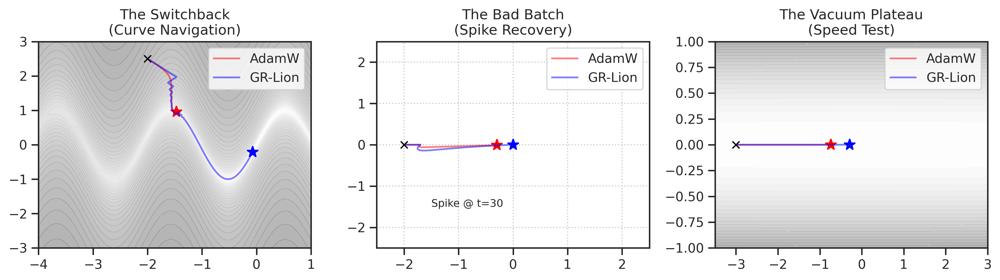
save animation#
import matplotlib.animation as animation
from matplotlib.colors import LogNorm
# ==========================================
# 2. Simulation Setup
# ==========================================
def get_optimizer_state(name, test_name, lr=0.01):
# Initial Positions
if test_name == "Switchback":
params = torch.tensor([-2.0, 2.5], requires_grad=True)
elif test_name == "BadBatch":
params = torch.tensor([-2.0, 0.0], requires_grad=True)
elif test_name == "Plateau":
params = torch.tensor([-3.0, 0.0], requires_grad=True)
# Optimizer Config
if name == "AdamW":
opt = AdamW([params], lr=lr, betas=(0.9, 0.999))
elif name == "GR-Lion":
# High gravity memory (beta=0.999) as discussed
opt = GeneralRelativisticLion([params], lr=lr, mass=0.1, kappa=0.1, beta_gravity=0.99, betas=(0.9, 0.9))
return {"params": params, "opt": opt, "traj": [], "name": name}
# ==========================================
# 3. Animation Logic
# ==========================================
def animate_dynamics(filename="gr_lion_vs_adamw.mp4", frames=350):
tests = ["Switchback", "BadBatch", "Plateau"]
# Setup Figure
fig, axes = plt.subplots(1, 3, figsize=(12, 3.5), dpi=300)
# Initialize States [Test][Optimizer]
states = {}
lines = {}
heads = {} # Markers for current position
step_texts = {} # <--- NEW: Dictionary to hold text objects
# Pre-compute backgrounds and init plots
for i, test in enumerate(tests):
ax = axes[i]
states[test] = [get_optimizer_state("AdamW", test), get_optimizer_state("GR-Lion", test)]
# --- Background Contours ---
if test == "Switchback":
x = np.linspace(-4, 1, 500); y = np.linspace(-3, 3, 500)
X, Y = np.meshgrid(x, y)
Z = 100 * (Y - np.sin(X * 3.0))**2 + 0.1 * X**2
ax.contourf(X, Y, np.log(Z + 1), levels=30, cmap='gray_r', alpha=0.3)
ax.set_title("The Switchback\n(Curve Navigation)")
elif test == "BadBatch":
ax.set_title("The Bad Batch\n(Spike Recovery)")
ax.set_xlim(-2.5, 2.5); ax.set_ylim(-2.5, 2.5)
ax.grid(True, linestyle=':', alpha=0.6)
ax.text(-2.0, 1.5, "gradient spike @ t=30", fontsize=9)
elif test == "Plateau":
x = np.linspace(-3.5, 1.5, 100); y = np.linspace(-1, 1, 100)
X, Y = np.meshgrid(x, y)
Z = 0.0001 * X**2 + Y**2
ax.contourf(X, Y, Z, levels=20, cmap='gray_r', alpha=0.3)
ax.set_title("The Vacuum Plateau\n(Speed Test)")
# --- Init Lines ---
lines[test] = []
heads[test] = []
for s in states[test]:
color = 'red' if s['name'] == "AdamW" else 'blue'
# Line history
line, = ax.plot([], [], color=color, lw=2, alpha=0.6, label=s['name'])
# Current head
head, = ax.plot([], [], marker='*', color=color, markersize=12)
lines[test].append(line)
heads[test].append(head)
# Record initial position
s['traj'].append(s['params'].detach().numpy().copy())
ax.legend(loc='lower right')
# --- NEW: Init Step Text ---
# transform=ax.transAxes ensures the text stays at (5%, 90%) relative to the box
step_texts[test] = ax.text(0.05, 0.9, '', transform=ax.transAxes, fontsize=10)
# --- Update Function ---
def update(frame):
for test in tests:
# Update Step Count Text
step_texts[test].set_text(f"Step: {frame}")
for idx, s in enumerate(states[test]):
params = s['params']
opt = s['opt']
opt.zero_grad()
x, y = params[0], params[1]
# --- Loss Calculation ---
if test == "Switchback":
target_y = torch.sin(x * 3.0)
loss = 100 * (y - target_y)**2 + 0.1 * x**2
loss.backward()
elif test == "BadBatch":
loss = x**2 + y**2
loss.backward()
# Inject Spike at Frame 20
if frame == 30:
with torch.no_grad():
params.grad.add_(torch.tensor([100.0, 100.0]))
elif test == "Plateau":
loss = 0.0001 * x**2 + y**2
loss.backward()
opt.step()
# Record
pos = params.detach().numpy().copy()
s['traj'].append(pos)
# Update Plots
traj = np.array(s['traj'])
lines[test][idx].set_data(traj[:, 0], traj[:, 1])
heads[test][idx].set_data([pos[0]], [pos[1]])
return [l for sublist in lines.values() for l in sublist] + \
[h for sublist in heads.values() for h in sublist] + \
list(step_texts.values()) # <--- NEW: Return text artists for blitting
# --- Generate Animation ---
print(f"Generating animation ({frames} frames)... this may take a minute.")
anim = animation.FuncAnimation(fig, update, frames=frames, interval=30, blit=True)
# Save
writer = animation.FFMpegWriter(fps=30, metadata=dict(artist='Me'), bitrate=1800)
anim.save(filename, writer=writer)
print(f"Saved to {filename}")
plt.close()
%%time
save_file = tmp_dir / 'gr_lion_vs_adamw.mp4'
animate_dynamics(save_file, frames=3000)
Generating animation (3000 frames)... this may take a minute.
Saved to /home/hadi/Dropbox/git/jb-progress-2026/tmp/gr_lion_vs_adamw.mp4
CPU times: user 9min 22s, sys: 13.8 s, total: 9min 36s
Wall time: 10min 1s
save animation (stronger x drift)#
x_drift_strength = 1.0
import matplotlib.animation as animation
from matplotlib.colors import LogNorm
# ==========================================
# 2. Simulation Setup
# ==========================================
def get_optimizer_state(name, test_name, lr=0.01):
# Initial Positions
if test_name == "Switchback":
params = torch.tensor([-2.0, 2.5], requires_grad=True)
elif test_name == "BadBatch":
params = torch.tensor([-2.0, 0.0], requires_grad=True)
elif test_name == "Plateau":
params = torch.tensor([-3.0, 0.0], requires_grad=True)
# Optimizer Config
if name == "AdamW":
opt = AdamW([params], lr=lr, betas=(0.9, 0.999))
elif name == "GR-Lion":
# High gravity memory (beta=0.999) as discussed
opt = GeneralRelativisticLion([params], lr=lr, mass=0.1, kappa=0.1, beta_gravity=0.99, betas=(0.9, 0.9))
return {"params": params, "opt": opt, "traj": [], "name": name}
# ==========================================
# 3. Animation Logic
# ==========================================
def animate_dynamics(filename="gr_lion_vs_adamw.mp4", frames=350):
tests = ["Switchback", "BadBatch", "Plateau"]
# Setup Figure
fig, axes = plt.subplots(1, 3, figsize=(12, 3.5), dpi=300)
# Initialize States [Test][Optimizer]
states = {}
lines = {}
heads = {} # Markers for current position
step_texts = {} # <--- NEW: Dictionary to hold text objects
# Pre-compute backgrounds and init plots
for i, test in enumerate(tests):
ax = axes[i]
states[test] = [get_optimizer_state("AdamW", test), get_optimizer_state("GR-Lion", test)]
# --- Background Contours ---
if test == "Switchback":
x = np.linspace(-4, 1, 500); y = np.linspace(-3, 3, 500)
X, Y = np.meshgrid(x, y)
Z = 100 * (Y - np.sin(X * 3.0))**2 + x_drift_strength * X**2
ax.contourf(X, Y, np.log(Z + 1), levels=30, cmap='gray_r', alpha=0.3)
ax.set_title("The Switchback\n(Curve Navigation)")
elif test == "BadBatch":
ax.set_title("The Bad Batch\n(Spike Recovery)")
ax.set_xlim(-2.5, 2.5); ax.set_ylim(-2.5, 2.5)
ax.grid(True, linestyle=':', alpha=0.6)
ax.text(-2.0, 1.5, "gradient spike @ t=30", fontsize=9)
elif test == "Plateau":
x = np.linspace(-3.5, 1.5, 100); y = np.linspace(-1, 1, 100)
X, Y = np.meshgrid(x, y)
Z = 0.0001 * X**2 + Y**2
ax.contourf(X, Y, Z, levels=20, cmap='gray_r', alpha=0.3)
ax.set_title("The Vacuum Plateau\n(Speed Test)")
# --- Init Lines ---
lines[test] = []
heads[test] = []
for s in states[test]:
color = 'red' if s['name'] == "AdamW" else 'blue'
# Line history
line, = ax.plot([], [], color=color, lw=2, alpha=0.6, label=s['name'])
# Current head
head, = ax.plot([], [], marker='*', color=color, markersize=12)
lines[test].append(line)
heads[test].append(head)
# Record initial position
s['traj'].append(s['params'].detach().numpy().copy())
ax.legend(loc='lower right')
# --- NEW: Init Step Text ---
# transform=ax.transAxes ensures the text stays at (5%, 90%) relative to the box
step_texts[test] = ax.text(0.05, 0.9, '', transform=ax.transAxes, fontsize=10)
# --- Update Function ---
def update(frame):
for test in tests:
# Update Step Count Text
step_texts[test].set_text(f"Step: {frame}")
for idx, s in enumerate(states[test]):
params = s['params']
opt = s['opt']
opt.zero_grad()
x, y = params[0], params[1]
# --- Loss Calculation ---
if test == "Switchback":
target_y = torch.sin(x * 3.0)
loss = 100 * (y - target_y)**2 + x_drift_strength * x**2
loss.backward()
elif test == "BadBatch":
loss = x**2 + y**2
loss.backward()
# Inject Spike at Frame 20
if frame == 30:
with torch.no_grad():
params.grad.add_(torch.tensor([100.0, 100.0]))
elif test == "Plateau":
loss = 0.0001 * x**2 + y**2
loss.backward()
opt.step()
# Record
pos = params.detach().numpy().copy()
s['traj'].append(pos)
# Update Plots
traj = np.array(s['traj'])
lines[test][idx].set_data(traj[:, 0], traj[:, 1])
heads[test][idx].set_data([pos[0]], [pos[1]])
return [l for sublist in lines.values() for l in sublist] + \
[h for sublist in heads.values() for h in sublist] + \
list(step_texts.values()) # <--- NEW: Return text artists for blitting
# --- Generate Animation ---
print(f"Generating animation ({frames} frames)... this may take a minute.")
anim = animation.FuncAnimation(fig, update, frames=frames, interval=30, blit=True)
# Save
writer = animation.FFMpegWriter(fps=30, metadata=dict(artist='Me'), bitrate=1800)
anim.save(filename, writer=writer)
print(f"Saved to {filename}")
plt.close()
%%time
frames = 1000
save_file = tmp_dir / f'gr_lion_vs_adamw_T={frames}.mp4'
animate_dynamics(save_file, frames=frames)
Generating animation (1000 frames)... this may take a minute.
Saved to /home/hadi/Dropbox/git/jb-progress-2026/tmp/gr_lion_vs_adamw_T=1000.mp4
CPU times: user 2min 56s, sys: 4.51 s, total: 3min
Wall time: 3min 9s